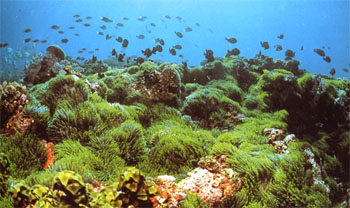

|
第７ 師走に水泳を楽しむ
 海水の温度は暖く水泳には最適の温度でした。ワイワイがやがや楽しそうに水浴を楽しんでいました。ところが、誰かが、手榴弾を一ケ海中に投げ込んだ。ボーンという鈍い音と共に海中に白い泡がたちこめた。水深は２メートルぐらいあった。手榴弾の衝撃波を受け、死んだ魚が白い腹を上に向けて海面に浮かび上がった。今まで水浴を楽しんでいた兵隊たちがボーンという音を聞くと共に我先に魚捕りに熱中し出しました。私も仲間に入り魚を探し始めましたら、大きなボラが一匹仮死状態になって海中で動かないでいたのを見つけ、しめた！と思って捕えようとしたら、たちまち逃げてしまい悔しい思いをしました。誠に楽しい一時でした。生死を賭けた戦場に来て、こんなに楽しい体験をするとは思ってもいませんでした。その日の夜食は豪華でした。 |